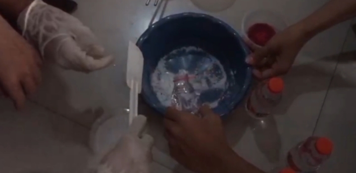
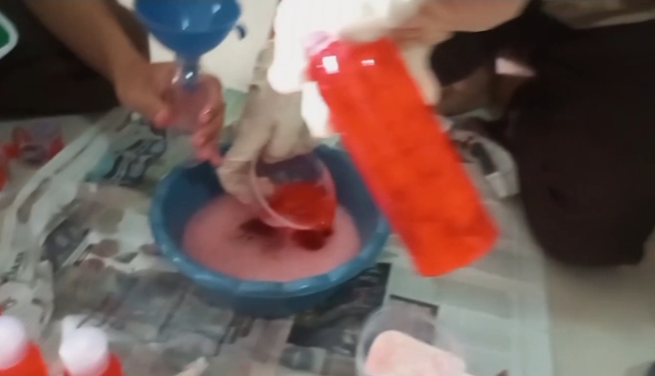

Zat benda adalah segala sesuatu yang memiliki massa dan menempati ruang. Semua benda di sekitar kita termasuk zat benda, seperti air, udara, kayu, besi, dan plastik.
Zat benda tersusun dari partikel sangat kecil seperti atom dan molekul yang membentuk berbagai jenis materi.
Unsur adalah zat tunggal yang tidak dapat diuraikan lagi menjadi zat yang lebih sederhana melalui reaksi kimia biasa.
Unsur tersusun dari satu jenis atom saja. Contohnya:
Senyawa adalah zat yang terbentuk dari dua atau lebih unsur yang bergabung melalui reaksi kimia.
Contoh senyawa
Pembuatan sabun cuci tangan berkaitan dengan konsep unsur dan zat benda karena sabun tersusun dari berbagai senyawa yang berasal dari unsur-unsur kimia. Dalam proses pembuatannya, beberapa zat dicampurkan sehingga terjadi perubahan zat dan menghasilkan produk baru berupa sabun yang dapat digunakan untuk membersihkan tangan.